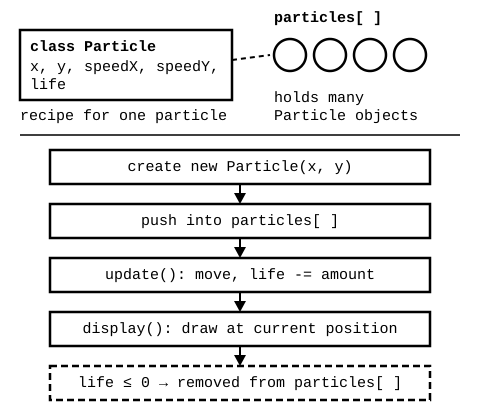

Open and click
Open Array of Dots and click a few times. Nothing else to prepare.
Aalto University
Session 03 gave one ball its own x, y, and speed. Now we create many independently moving things at once, each keeping its own position, movement, and lifetime, stored together in one array.

Open Array of Dots and click a few times. Nothing else to prepare.
Run Particles Follow, change one starting value or the lifetime, then delete the update() call on purpose - notice particles freeze in place with no error - and put it back.
Save your own particle behavior - falling, rising, scattering. Write down what class Particle describes and what the array manages.
Open Array of Dots first to see one array hold many positions, then Particles Follow - the required exercise - for a full array of Particle objects that update, draw, and remove themselves.
Use these source files when you are working in Processing or comparing p5.js with the original syntax. Processing stores particles in an ArrayList; p5.js uses a plain array - same problem, different collection syntax.